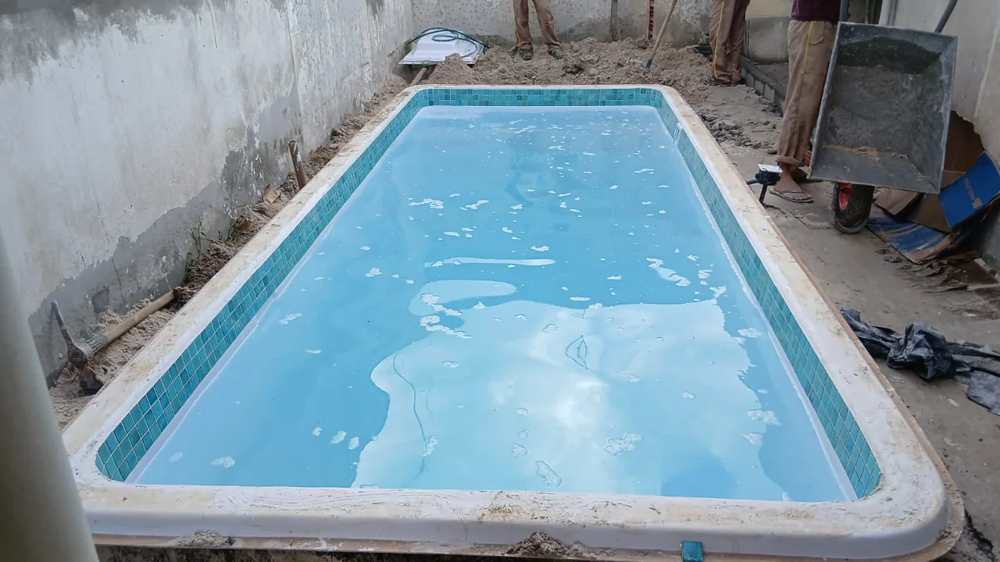

01 · Instalação
O entorno ainda está em construção
É nessa fase que ficam visíveis a área ocupada pelo casco, a circulação disponível e os pontos que ainda receberão acabamento.
Caso real
Este caso reúne registros reais de uma instalação residencial. A cidade e o modelo não estão identificados no material fornecido, por isso a página se concentra no que as imagens comprovam: a transformação entre a etapa de obra e o espaço finalizado.
Linha do processo
As imagens reforçam um ponto importante para quem está pesquisando: o casco é apenas parte do conjunto. O entorno, o acabamento e a integração com o espaço precisam ser considerados desde o planejamento.

É nessa fase que ficam visíveis a área ocupada pelo casco, a circulação disponível e os pontos que ainda receberão acabamento.

O registro mostra a piscina já posicionada enquanto o entorno ainda recebe os ajustes necessários para concluir a área.

Com borda, piso e elementos do entorno concluídos, a piscina deixa de ser uma peça isolada e passa a compor o ambiente.
O que observar
Registre medidas do quintal, largura de portões e corredores, desníveis e obstáculos no percurso entre a rua e o ponto de instalação. Essas informações ajudam a filtrar alternativas e a planejar a logística.
Confirme por escrito quais etapas estão incluídas: transporte, preparação, equipamentos, instalações, acabamento, garantias e responsabilidades de cada parte. O site não substitui uma avaliação do local.